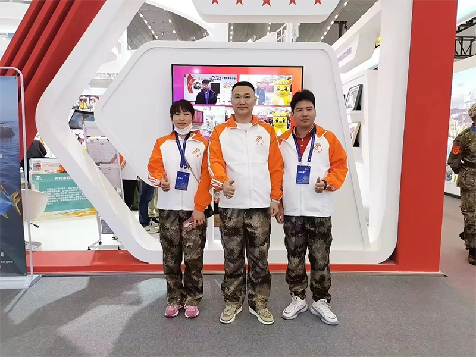

The company was established and began engaging in the production and sale of zippers


DFZIP Dingfu Zipper is a modern enterprise specializing in the R&D, production, and sales of zippers, located in Guangdong Province, China. Founded in 2010, the company has grown over the past decade-plus to become a well-known domestic manufacturer of waterproof zippers.
The company's main products include woven airtight zippers, woven waterproof zippers, adhesive-tooth airtight zippers, YKK waterproof zippers, and airtight and waterproof backpacks. These products are widely used in outdoor gear, luggage, apparel, water sports, and other fields. Thanks to their outstanding quality and professional service, they have earned the trust and high praise of numerous domestic and international customers.
We consistently adhere to the business philosophy of “quality first, customer foremost,” and are committed to providing customers with high-quality zipper products and comprehensive solutions. The company boasts advanced production equipment, a professional technical team, and a rigorous quality control system, ensuring that every zipper meets the highest standards.
The company continuously and vigorously expands its domestic and international market channels, with products exported to major countries and regions around the world. Guided by the vision of becoming an outstanding enterprise that embodies a spirit of continuous innovation and progresses alongside global peers and the times, the company adheres to the corporate ethos of “pursuing excellence in every detail and creating cutting-edge technology.” Through technological advancement and management innovation, it strengthens its brand image and is committed to building a world-class brand—DFZIP®


Stay true to our original aspiration and pursue excellence
Become a global leader in waterproof zipper manufacturing, providing customers with the highest-quality products and services
Drive industry development through technological innovation and create value for every customer
Quality first, integrity-based management, innovative development, customer supremacy
Unity and collaboration, striving for excellence, daring to take on challenges, and pursuing greatness
Ten years of hard work have forged brilliance
The company was established and began engaging in the production and sale of zippers
We have introduced advanced production equipment and begun developing waterproof zipper products
Successfully launched core products such as woven airtight zippers and woven waterproof zippers
Established a partnership with the international brand YKK to expand into the high-end market
Launched a line of airtight and waterproof backpacks to enhance our product portfolio
Continuously innovate and develop, serving over 500 domestic and international customers
Quality certification, trustworthy
Certified under the ISO9001 quality management system
Certified high-quality supplier by multiple well-known brands
Multiple waterproof zipper technology patent certifications
Awarded multiple industry innovation and development awards